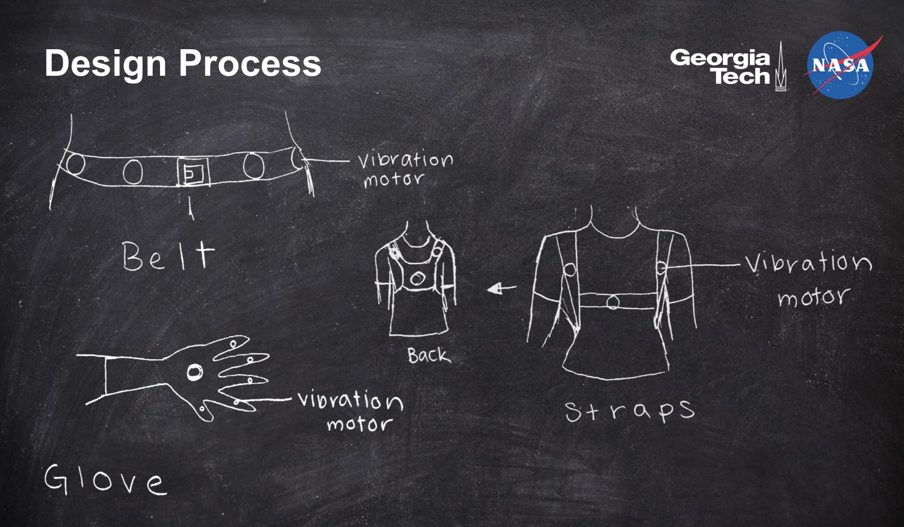

I worked with 3 other students to develop a prototype to help NASA develop tools for astronauts. NASA requested a wearable device to help astronauts navigate on planetary surfaces where they might not have audio or visual contact. The goal was not to have a functioning product or even robust prototype, but rather to generate idea that NASA might expand upon. To meet this goal, we developed a prototype of a vest with vibration motors to provide haptic feedback for navigation. At the end of the semester, we presented at NASA's JSC Wearable Technology Symposium in Houston, TX. More details about that can be found through a post by one of the course instructors here.
The focus of this was to explore the technology of ubiquitous computing, rather than the design process of user interviews, testing, iteration, et cetera. We started by developing goals to guide our prototype development. Based on NASA’s project proposal, we decided that our process should be guided by three goals: 1) the system should be comfortable, durable, and adaptable, 2) the system should effectively communicate through haptic feedback, and 3) there should be intuitive activation of the system.
We brainstormed ideas individually, came together, sketched, and discussed. Based on factors, like fit and comfort of wearables and vibrator motors, we combined a few of our ideas. The final design we developed was a vest with four vibration motors on the back in a diamond formation. To provide directional feedback, we created vibration patterns. It turned out that designing the system activation was the most exciting. Since this device is only to be triggered during an emergency when other communication with the base is lost, we wanted to make sure it couldn’t accidentally be triggered. On the other hand, it needs to be triggered easily if something does occur. We ended up having a velcro strip on one arm that can easily be pulled up by the other arm. This activates the system and begins providing directions back to the safe location. In actual development, this plus the vibration motors on the back, would be incorporated into a future space suit. For our prototype, we treated it as a standalone vest.
Since this class was not about user testing, we informally had people try on the vest and give us feedback about how they interpreted the directions (move forward, turn around, turn right, turn left). If we had continued this project, we would have revisited the patterns and vibration motors based on the informal feedback, made a few modifications based on the feedback, existing systems, and research, and then conducted a formal user study.
